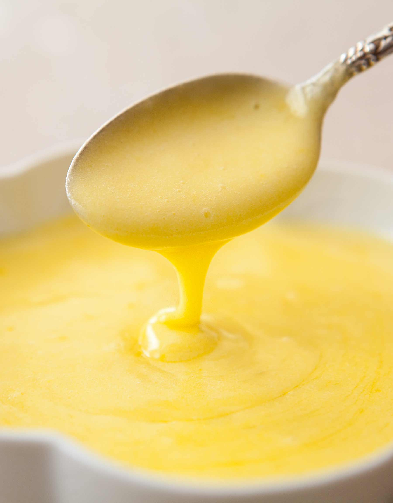

Hollandaise Sauce
Ingredients
- Two eggs (separated)
- 1/4 Lemon (or ~ 1 tsp)
- pinch of salt
- pinch of cayenne (or black pepper)
- 1/4 cup butter
Directions
- Combine all ingredients (except butter) in small blender.
- Blend ingredients thouroughly.
- Melt butter on stove.
- Blend egg mixture, and believe me, keep blending.
- Do NOT allow the butter to "cook" or "brown". However, it must be HOT before combining with egg mixture.
- When butter is at the perfect temperature, ~280-300 ℉, slowly add to egg mixure while blending with whisk.
- When butter is fullly combined, blend on high for at least 2 minutes.
- Enjoy! Use with steamed asparagus or on eggs benedict.

Contact Me!